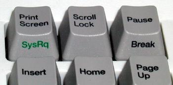

Kullandığınız Ubuntu sisteminiz ile hiç donma yaşadınız mı?
Fareyi oynattığınız ya da klavyeden tuşlara bastığınız hâlde hiçbir şey olmuyor! Bu sorunla karşılaştığımızda güç düğmesine basarak sistemi yeniden başlatmak son çare olmalı, öyle değil mi? Hepimizin bildiği gibi -yanlışsa düzeltin- sistemi sıklıkla güç düğmesinden yeniden başlatmak donanım üzerinde özellikle sabit disk üzerinde hasara neden olabilir. Peki, donmuş bir Ubuntu sistemini yeniden başlatmanın doğru yolu var mı? Evet var. Sistemi sağlıklı bir şekilde yeniden başlatmak için “Sihirli SysRq Tuşu”nu kullanacağız.
Bu tuşun konumuzla ilgili olan görevi doğrudan Linux klavye sürücüsünün bir parçası olarak uygulanmaktadır. Sadece “kernel panic” sorununda bu tuş devredışı kalmaktadır, kernel çalışmaya devam ettiği sürece etkindir. “kernel panic” dışındaki tüm donmalarda güvenli yeniden başlatma için “SysRq” tuşunu kullanabilirsiniz. SysRq tuşu klavyenin üst kısmında ve Scroll Lock tuşunun yanında yer alır ve genellikle Print Screen tuşu ile aynı tuşu paylaşır.

Bu sihiri kullanmak için aşağıdaki komutu yürüterek “/proc/sys/kernel/sysrq” dosyasının değerini kontrol edeceğiz.
cat /proc/sys/kernel/sysrq
Eğer komutun çıktısı “1” ise sihirli tuş etkindir ve kullanmaya hazırız demektir. Değilse aşağıdaki komutu yürütüp dosyanın değerini “1” olarak değiştiriyoruz.
sudo echo "1" > /proc/sys/kernel/sysrq
Ve Sihir Başlıyor
Ubuntu donduğu anda yalnızca “Alt+SysRq” tuş bileşimini basılı tutun ve sırayla aşağıdaki tuşlara basın, tuşlara basarken arada birkaç saniye bekleyin:
“reisub”
Kullanım şu şekildedir:
Alt+SysRq+<komut tuşu>
Örnek:
Alt+SysRq+r
Sihir Ne İşe Yarıyor?
| Tuş | İşlevi |
|---|---|
| r | Klavye kontrolünü X sunucusundan alır, çekirdek kontrolünde ham klavye kipine çevirir. |
| e | Nezaketen bütün uygulamalara sonlandırma sinyali gönderir. |
| i | Tüm uygulamaları derhâl sonlandırmaya zorlar, tüm süreçlere “kill” sinyali gönderir. |
| s | Önbelleğinizi diske aktarır. |
| u | Tüm dosya sistemlerini salt-okunur olarak yeniden bağlar. |
| b | Bilgisayarınızı yeniden başlatır. |
Sihirli tuş ile kullanılabilen diğer komutlar ve ayrıntılı bilgi için:
http://kernel.org/doc/Documentation/sysrq.txt
belgesini inceleyebilirsiniz.
Ayrıca aşağıda bulunan adreslerdeki yazılara bakabilirsiniz;